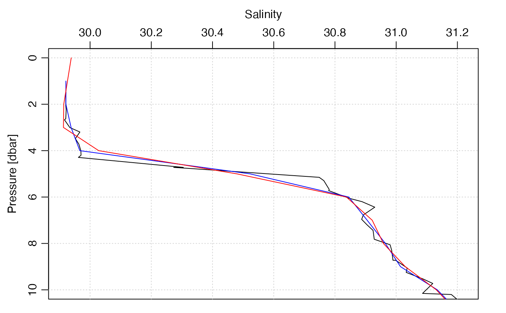

Interpolate a CTD profile to specified pressure values. This is used
by sectionGrid(), but is also useful for dealing with individual
CTD/bottle profiles.
ctdDecimate(
x,
p = 1,
method = "boxcar",
rule = 1,
e = 1.5,
debug = getOption("oceDebug")
)a ctd object.
pressure increment, or vector of pressures. In the first case,
pressures from 0dbar to the rounded maximum pressure are used, incrementing by
p dbars. If a vector of pressures is given, interpolation is done to
these pressures.
the method to be used for calculating decimated values. This may be a function or a string naming a built-in method. The built-in methods are as follows.
"boxcar" (based on a local average)
"approx" (based on linear
interpolation between neighboring points, using approx()
with the rule argument specified here)
"approxML" as "approx",
except that a mixed layer is assumed to apply above the top data value; this
is done by setting the yleft argument to approx(), and
by calling that function with rule=c(2,1))
"lm" (based on local
regression, with e setting the size of the local region);
"rr" for the Reiniger and Ross method, carried out with oce.approx();
"unesco" (for the UNESCO method, carried out with oce.approx().
On the other hand, if method is a function, then it must take
three arguments, the first being pressure, the second being an arbitrary
variable in another column of the data, and the third being a vector of target
pressures at which the calculation is carried out, and the return value must be
a vector. See “Examples”.
an integer that is passed to approx(), in the
case where method is "approx". Note that the default value
for rule is 1, which will inhibit extrapolation beyond the observed
pressure range. This is a change from the behaviour previous to May 8, 2017,
when a rule of 2 was used (without stating so as an argument).
is an expansion coefficient used to calculate the local neighbourhoods
for the "boxcar" and "lm" methods. If e=1, then the
neighbourhood for the i-th pressure extends from the (i-1)-th pressure to
the (i+1)-th pressure. At the endpoints it is assumed that the outside
bin is of the same pressure range as the first inside bin. For other values of
e, the neighbourhood is expanded linearly in each direction. If the
"lm" method produces warnings about "prediction from a rank-deficient
fit", a larger value of "e" should be used.
an integer specifying whether debugging information is
to be printed during the processing. This is a general parameter that
is used by many oce functions. Generally, setting debug=0
turns off the printing, while higher values suggest that more information
be printed. If one function calls another, it usually reduces the value of
debug first, so that a user can often obtain deeper debugging
by specifying higher debug values.
A ctd object, with pressures that are as set by
the "p" parameter and all other properties modified appropriately.
The "approx" and "approxML" methods may be best for bottle data,
in which the usual task is
to interpolate from a coarse sampling grid to a finer one. The distinction
is that "approxML" assumes a mixed-layer above the top sample value. For CTD data, the
"boxcar" method may be the preferred choice, because the task is normally
to sub-sample, and some degree of smoothing is usually desired. (The
"lm" method can be quite slow, and its results may be quite similar to those of the
boxcar method.)
For widely-spaced data, a sort of numerical cabeling effect can result when density is computed based on interpolated salinity and temperature. See reference 2 for a discussion of this issue and possible solutions.
Data-quality flags contained within the original object are ignored by this
function, and the returned value contains no such flags. This is because such
flags represent an assessment of the original data, not of quantities derived
from those data. This function produces a warning to this effect. The
recommended practice is to use handleFlags() or some other means to
deal with flags before calling the present function.
R.F. Reiniger and C.K. Ross, 1968. A method of interpolation with application to oceanographic data. Deep Sea Research, 15, 185-193.
Oguma, Sachiko, Toru Suzuki, Yutaka Nagata, Hidetoshi Watanabe, Hatsuyo Yamaguchi, and Kimio Hanawa. “Interpolation Scheme for Standard Depth Data Applicable for Areas with a Complex Hydrographical Structure.” Journal of Atmospheric and Oceanic Technology 21, no. 4 (April 1, 2004): 704-15.
The documentation for ctd explains the structure of CTD objects, and also outlines the other functions dealing with them.
Other things related to ctd data:
CTD_BCD2014666_008_1_DN.ODF.gz,
[[,ctd-method,
[[<-,ctd-method,
as.ctd(),
cnvName2oceName(),
ctd-class,
ctd.cnv,
ctdFindProfiles(),
ctdRaw,
ctdRepair(),
ctdTrim(),
ctd,
d200321-001.ctd,
d201211_0011.cnv,
handleFlags,ctd-method,
initialize,ctd-method,
initializeFlagScheme,ctd-method,
oceNames2whpNames(),
oceUnits2whpUnits(),
plot,ctd-method,
plotProfile(),
plotScan(),
plotTS(),
read.ctd.itp(),
read.ctd.odf(),
read.ctd.odv(),
read.ctd.sbe(),
read.ctd.woce.other(),
read.ctd.woce(),
read.ctd(),
setFlags,ctd-method,
subset,ctd-method,
summary,ctd-method,
woceNames2oceNames(),
woceUnit2oceUnit(),
write.ctd()
library(oce)
data(ctd)
plotProfile(ctd, "salinity", ylim=c(10, 0))
p <- seq(0, 45, 1)
ctd2 <- ctdDecimate(ctd, p=p)
lines(ctd2[["salinity"]], ctd2[["pressure"]], col="blue")
p <- seq(0, 45, 1)
ctd3 <- ctdDecimate(ctd, p=p, method=function(x, y, xout)
predict(smooth.spline(x, y, df=30), xout)$y)
lines(ctd3[["salinity"]], ctd3[["pressure"]], col="red")
